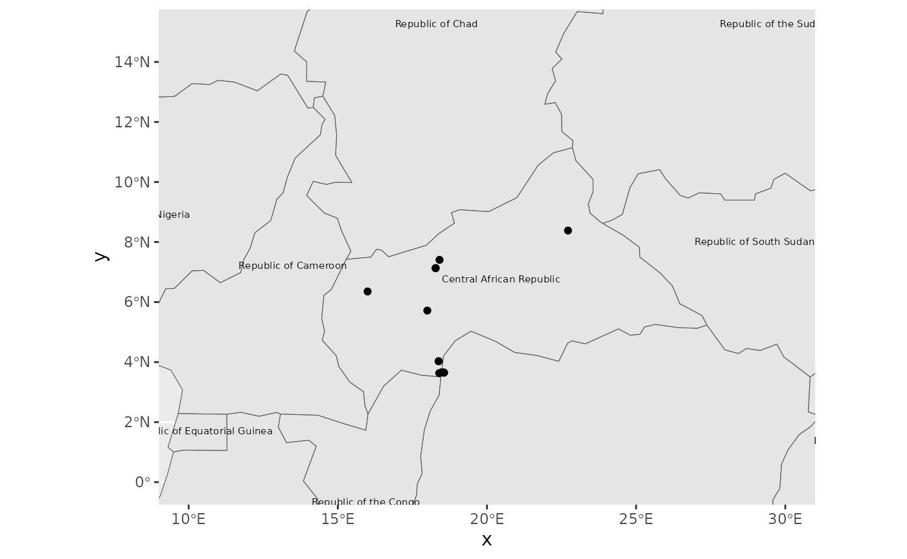

Simple plotting options for radiocarbon dates in c14_date_lists
Clemens Schmid
2024-03-16
Source:vignettes/simple_plotting.Rmd
simple_plotting.RmdThis vignette shows some basic workflows to plot radiocarbon dates in c14_date_lists. This is only a short compilation to get you started.
So let’s begin by loading the main packages for this endeavour: c14bazAAR and ggplot2. And of course magrittr to enable the pipe (%>%) operator. We will use functions from other packages as well, but address them individually with the :: operator.
The basis for this example code is the adrac data collection by Dirk Seidensticker. So let’s download the data with the relevant c14bazAAR getter function:
adrac <- get_c14data("adrac")Temporal plotting of radiocarbon ages
Radiocarbon dating is a method to determine the absolute age of samples. Therefore one of the main aims for plotting naturally is to display temporal information. Let’s select the dates of one individual site – Batalimo in Central Africa – as a subset to reproduce two of the most common types of radiocarbon date plots.
If age modelling and date plotting on a local or regional scale is the major aim of your analysis, you might want to take a look at the oxcAAR package. It serves as an R interface to OxCal and provides powerful default plotting methods
Ridgeplots of density distributions
One way to plot radiocarbon ages is to show the probability density distribution of individual calibrated dates as ridgeplots. To produce a plot like that, we first of all need the age-probability information for each date. We can calculate that with the function c14bazAAR::calibrate().
This adds a list column calprobdistr to the input c14_date_list. The list column contains a nested data.frame for each date with its probability distribution.
## Radiocarbon date list
## dates: 7
## sites: 1
## countries: 1
## uncalBP: 2000 ― 200
##
## # A data frame: 7 × 17
## sourcedb sourcedb_version method labnr c14age c14std calprobdistr c13val site
## <chr> <date> <chr> <chr> <int> <int> <list> <dbl> <chr>
## 1 adrac 2024-03-16 NA Bdy-… 1890 130 <df> NA Bata…
## 2 adrac 2024-03-16 NA Bdy-… 1730 120 <df> NA Bata…
## 3 adrac 2024-03-16 NA Bdy-… 1990 210 <df> NA Bata…
## 4 adrac 2024-03-16 NA Bdy-… 240 75 <df> NA Bata…
## 5 adrac 2024-03-16 NA Bdy-… 1270 125 <df> NA Bata…
## 6 adrac 2024-03-16 NA Bdy-… 1798 101 <df> NA Bata…
## 7 adrac 2024-03-16 NA Gif-… 1590 90 <df> NA Bata…
## # ℹ 8 more variables: feature <chr>, period <chr>, material <chr>,
## # country <chr>, lat <dbl>, lon <dbl>, shortref <chr>, comment <chr>With tidyr::unnest() the list column can be dissolved (“unnested”) and integrated into the initial c14_date_list. Of course the latter looses its original structure and meaning with this step. Each row now represents the probability for one date and year.
A table like that can be used for plotting a ridgeplot.
Batalimo_cal_dens %>%
ggplot() +
# a special geom for ridgeplots is provided by the ggridges package
ggridges::geom_ridgeline(
# the relevant variables that have to be mapped for this geom are
# x (the time -- here the calibrated age transformed to calBC),
# y (the individual lab number of the dates) and
# height (the probability for each year and date)
aes(x = -calage + 1950, y = labnr, height = density),
# ridgeplots lack a scientifically clear y axis for each
# distribution plot and we can adjust the scaling to our needs
scale = 300
) +
xlab("age calBC/calAD") +
ylab("dates")Calcurve plot
Another way to plot radiocarbon dates is to project them onto a calibration curve. The Bchron R package contains a data.frame with the intcal13 calibration curve data. We can load the intcal13 table directly from Bchron.
load(system.file('data/intcal13.rda', package = 'Bchron'))For this kind of plot it is more convenient to work with the simplified calrange output of c14bazAAR::calibrate().
Like the calprobdistr option this also adds a list column to the input c14_date_list, but a much smaller one. For each date only the age ranges that make up the 2-sigma significance interval of the probability distribution are stored.
Batalimo_calibrated$calrange[1:3]## [[1]]
## dens from to
## 1 91.9 1521 2148
## 2 3.3 2275 2287
##
## [[2]]
## dens from to
## 1 93.7 1363 1889
## 2 1.5 1913 1917
##
## [[3]]
## dens from to
## 1 94.1 1407 2430
## 2 1.2 2453 2460The resulting table can also be unnested to make the list column content available in the main table.
Now we can plot the calibration curve and – on top – error bars with the calrange sequences.
ggplot() +
# line plot of the intcal curve
geom_line(
data = intcal13,
# again we transform the age information from BP to BC
mapping = aes(x = -V1 + 1950, y = -V2 + 1950)
) +
# the errorbars are plotted on top of the curve
geom_errorbarh(
data = Batalimo_cal_range,
mapping = aes(y = -c14age + 1950, xmin = -to + 1950, xmax = -from + 1950)
) +
# we define the age range manually -- typically the calcurve
# is arranged to go from the top left to the bottom right corner
xlim(-1000, 2000) +
ylim(2000, -1000) +
xlab("age calBC/calAD") +
ylab("uncalibrated age BC/AD")
Spatial mapping of radiocarbon dates
Most radiocarbon dates that can be accessed with c14bazAAR have coordinate information for the respective sites where the samples were taken. Spatial maps therefore are an important form of data visualization as well.
c14_date_lists can directly be transformed to objects of class sf. sf objects were introduced by the R package sf which provides a tidy interface to work with spatial data in R.
## Warning in remove_dates_without_coordinates(., quiet): Dates without
## coordinates were removed.This tabular data structure contains the spatial point information for each date in a column geom, but also the initial columns of the input dataset: data.*
## Simple feature collection with 2178 features and 3 fields
## Geometry type: POINT
## Dimension: XY
## Bounding box: xmin: 8.717 ymin: -16.75 xmax: 30.683 ymax: 12.2
## Geodetic CRS: WGS 84
## First 10 features:
## data.labnr data.c14age data.c14std geom
## 1 AA-33171 13800 100 POINT (10.078 1.727)
## 2 AA-33172 6665 90 POINT (10.078 1.727)
## 3 AA-33225 10015 55 POINT (28.6 2.17)
## 4 AA-33226 6025 70 POINT (28.6 2.17)
## 5 AA-36757 4254 49 POINT (10.078 1.727)
## 6 AA-36758 10450 93 POINT (10.078 1.727)
## 7 AA-36792 5810 290 POINT (10.078 1.727)
## 8 AA-36793 30300 1300 POINT (10.078 1.727)
## 9 AA-78447 2362 39 POINT (16.924 3.989)
## 10 AA-78448 2171 37 POINT (16.924 3.989)It can be manipulated with the powerful dplyr functions. We filter out all dates from one particular publication (Moga 2008), group the dates by site and apply the summarise command to keep only one value per group. As we do not define an operation to fold the other variables in the input table, they are removed. Only the geometry column remains.
Moga_spatial <- adrac_sf %>%
dplyr::filter(grepl("Moga 2008", data.shortref)) %>%
dplyr::group_by(data.site) %>%
dplyr::summarise(.groups = "drop")Interactive map view
The resulting sf object can be plotted interactively with the mapview package.
# Moga_spatial %>% mapview::mapview()Static map plot
The sf object can also be used for a static plot – which is useful for publications. We download some simple country border base map vector data with the rnaturalearth R package and transform it to sf as well.
countries <- rnaturalearth::ne_countries() %>% sf::st_as_sf()Now we can combine the base layer and our point data to create the prototype of a static map plot.
ggplot() +
# geom_sf is a special geom to handle spatial data in the sf format
geom_sf(data = countries) +
# the explicit mapping of variables is not necessary here, as geom_sf
# automatically finds the *geom* column in the input table
geom_sf_text(data = countries, mapping = aes(label = formal_en), size = 2) +
geom_sf(data = Moga_spatial) +
# with geom_sf comes coord_sf to manage the underlying coordinate grid
coord_sf(xlim = c(10, 30), ylim = c(0, 15))
Please feel free to open an issue here if you have questions about plotting radiocarbon dates.